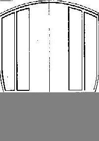

A Coach Made With GMax
by Richard Osborne
Chapter 3: First Texturing
The first texture we need is for the calibration box. I'm assuming you have a decent plan, probably a .gif or .jpg. Carefully isolate the side as measured, then the end. Save both as .tif files in your project directory. Gmax handles .tif & .ace files - other file types are problematical. You need to convert .tga files to .ace files before applying textures. This gives one more step than TSM but it is necessary.

I don't like to have programs running in the background so I'd have exited Gmax before opening the graphics program. In Gmax open the project. Make the box active & go into "polygon" mode. Drag the mouse over the ends to highlight them. We'll only make limited use of the calibration box; it isn't necessary to have both sides & both ends.
On the top toolbar find the "Trainsim Materials Editor" button, it's the one which looks like a red ball with acne. A description of this is in the readme file in the gamepack, sadly I found this confusing. Obviously we're starting with "New", change the name to "End", then "Open". You'll see that it opens in the project directory - you could specify another directory but why make life hard? You'll also see that it lists .ace files; press the button by "Files of Type"...It lists .jpg, .tga & .bmp but will refuse to use them, you'll need to use nothing but .tif & .ace files. Gmax has a bad habit of completely mangling files if you give the slightest excuse. Specify .tif & highlight "End", make sure "Preview" is ticked, you'll see your texture file. Click "Open".
The file image now appears in the preview image of the material editor - note that it's square. Don't worry it's only square in the window. Don't bother about the settings. Make sure the end polygons are still highlighted & press "Put!". Notice you have "Put!" & "Put..."; "Get!" & "Get..." You'll use the ones with the exclamation marks. Press the Display icon on the side panel which looks like a TV set, make sure wireframe & shaded are both ticked as "Material Color". Switching from material to object colour is very useful later when the texture might prove confusing.
Something should have changed - the polygons should show white. On the side panel go into "modify". Under the name & colour boxes is "Modifier List" - press the arrow. A daunting list will show. The only two we actually need are "UV Coordinate Modifiers" "UVW Map" "Unwrap UVW" If you're feeling brave you could modify the menu so that all the rest are hidden.
Press "UVW Map". You'll see that the texture can be applied in X, Y or Z plane by pressing the X, Y, Z buttons under "Alignment". Only one will make sense. On this occasion the texture will cover the whole face; press "Fit". The texture will fit the polygon BUT... it might be at 90 degrees. I'm not completely sure why the texture appears at right angles, it has to do with the axis orientation, but we might as well deal with it, it'll crop up again in future..
Press "Unwrap UVW" then "Edit". a screen will appear with the texture file showing; the file will appear upright. The 4 corners will be highlighted. Press the "Rotate" button & pull the points round 90 degrees. You'll see the image changed on the main screen. If the image is now showing left-to-right either rotate it 90 degrees the other way or press the "Flip" icon which is the one with 2 triangles.
When the image is in the right place we need to lock it so that it can't be overwritten. This is the bit which really confused me at first. On the side panel you'll still have the polygon option showing with a box next to the words "Editable Mesh" showing a negative symbol; put the mouse over this box & click. The list will collapse & the sign turn positive. Now right click, a small screen will appear with the words "Collapse All" highlighted - everything else to the top of the screen will be greyed-out. Press "Collapse All", the references to UVW editing will have gone. Regard this "Collapse All" as "Lock Everything" it is the key to texturing. Notice that in Gmax you can't clear textures you can only replace them.
Repeat for the sides which obviously uses a new texture.
Highlight the "Perspective View"; press the icon with 2 squares, bottom right. This will show just the Perspective View, press the "Zoom Extents" to show the box maximum size. Press the "Rotate" icon, a circle with 4 boxes will appear. It's very easy to get lost using this - dragging the side boxes rotates the image sideways, the top boxes rotate up & down. Dragging outside the circle rocks the horizon. Right click to lose the rotate tool. Only move the image a little at a time. Don't worry about the distortion on the perspective view. You can only see polygons which faces the viewer, you'll see through those facing away.
It's about time to save the project. You can set Gmax to save incrementally if you wish.